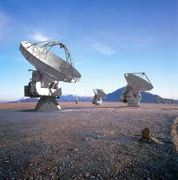
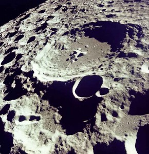

Astronomi
Astronomi nedir?
Dünyamızın da içinde bulunduğu evreni ve içindekileri konu alan ve bu cisimlerin yapılarını, bulundukları yerleri, hareket kanunlarını, meydana gelişlerini, zamanımıza kadar geçirdikleri değişiklikleri, gelecekte meydana gelebilecek olayları ortaya koymaya çalışan bilim Astronomi genel olarak gök cisimlerinin hareketlerini incelerken, 19. yüzyılda ortaya çıkanastrofizik ise gök cisimlerinin fiziksel özellikleriyle ilgilenmektedir.
Astronomi genel olarak gök cisimlerinin hareketlerini incelerken, 19. yüzyılda ortaya çıkanastrofizik ise gök cisimlerinin fiziksel özellikleriyle ilgilenmektedir.
Tarihçesi
Gece ve gündüzün değişmesi, mevsimlerin birbirini takip etmesi, yıldızlı gecelerde gökyüzünün görünüşü, güneşin, ayın ve diğer gök cisimlerinin doğup batması, bazılarının bütün sene görülmesi gibi hususlar, tarih boyunca insanların dikkatini gökyüzüne çeken noktalar olmuştur. Hareketleri yıldızların genel hareketinden farklı olan gök cisimleri, gezegenler olarak sınıflandırılmış ve bu meyanda Merkür, Venüs, Mars, Jüpiter ve Satürn ilk keşfedilen gezegenler olmuşlardır. Bu arada Güneş ve Ay’ın gezegenlerin genel hareketlerini takip etmediği de tespit edilmiştir. Bilinen ilk astronomik gözlemler Babiller zamanında yapılmış, gece ve gündüzün 12 saate bölünmesi bu devirde gerçekleştirilmiştir. Mısırlılarda astronomi bilgisi daha ileriydi. Piramitler’in şuurlu ve kesin bir astronomik yönlendirme ile inşaası, günümüzde bile hayret edilecek bir tarzda yapılmış olmaları, eski Mısırlıların astronomi bilgisi hakkında genel bir fikir vermektedir. Eski Yunan’da Thales ve Pythagoras gibi matematikçiler astronomi ile ilgilenmişlerdir. İskenderiye’de yaşayan Eratosthenes M.Ö. 3. yüzyılda dünyanın çevresini oldukça kesin bir şekilde hesaplamıştır. M.Ö. 2. yüzyılda yaşamış olan Hipparchus, ilk çağın tanınmış astronomlarından birisidir. İleri sürdüğü Güneş merkezli astronomik teori daha önce ortaya atılmış ise de, (Aristorchus teorisi) Hipparchus yıl ve ayın uzunluklarını da dikkate şayan bir hassaslıkla belirlemiş, oldukça hassas bir yıldız haritası ve kataloğu hazırlamıştır. Yaklaşık 850 yıldızın yerini ve tarifini vermiş, yıldızları parlaklıklarına göre sınıflandırmıştır. Bu sınıflandırma günümüzde bile kullanılmaktadır. Ayrıca, Ay’ın hareketinde Güneş’in çekiminden dolayı meydana gelen düzensizlikleri de tespit etmiştir. Daha sonra M.S. 2. yüzyılda yaşayan Ptolemi Hipparchus’un tespitine dayanarak bir kainat sistemi kurmuş ve bu Ptolemy (Batlemyus) Teorisi 1400 yıl geçerliliğini korumuştur. Gök cisimlerinin hareketlerinin güneşin merkez olarak kabul edilerek basitçe açıklanmasını Kopernik (1473-1543) yapmıştır. Ptolemy ve Kopernik’in sistemlerinin eksik noktası, fiziksel bir temelinin olmamasıydı. Galileo (1564-1642) ve Newton (1642-1727) bu sistemin kinematik tarafları yanında dinamik yönlerini de açıklayarak, modern astronomiye bir temel kurmuşlardır. Modern astronomiye yardımı bulunanlardan biri de Johannes Keppler (1571-1630)dir. Bulduğu, üç “Gezegensel Hareket Kanunu” aşağıdaki gibidir: 1. Gezegenler, odaklarının birinde güneş bulunan bir elips yörünge üzerinde hareket ederler. 2. Gezegenler, güneş etrafında hareket ederken, güneş ile gezegeni birleştiren doğru, eşit zamanlarda eşit sahalar tarar. 3. Gezegenlerin dönüş periyotlarının kareleri güneşe olan ortalama mesafelerinin (elipsin büyük eksenin yarı uzunluğu) küpleri ile orantılıdır. Keppler, bu kanunları, deneme-yanılma metodu ile 20 yıl araştırmış olup, newton 1687’de yerçekimi kanunlarını ortaya koyuncaya kadar mekanik bir temelden yoksun kalmışlardır. Jüpiter etrafında dönen kendi uydusu üzerinde Galileo tarafından 1610’da kendi yaptığı teleskopla gözlendiği halde, Kopernik’in kainat sistemi görüşü ancak 1627’de geçerlilik kazanmıştır.Astronomların Kullandığı Başlıca Aletler

Radyo teleskop: Modern astronominin en önemli buluşu sayılan bu alet, gök cisimlerinin yaydığı radyasyonun incelenmesinde kullanılır. Uzayın kulağı diye adlandırılan bu alet sayesindedir ki, varlıkları ancak yaydıkları radyo dalgalarıyla anlaşılabilen pulsar ve quasarların keşfi mümkün olabilmiştir.

Astronominin Başlıca Çalışma Sahaları
Güneş: Astronomik çalışmaların ilk safhası en yakın olan güneştir. Teleskobun keşfinden binlerce sene önce Çinli astronomlar güneşteki lekeleri tespit etmişlerdi. 16. yüzyılda Galileo küçük teleskobu ile bazı tespitler yapmıştır. Günümüzdeki astronomik araştırmalar, büyük ölçüde, güneşin radyasyon ve magnetik alanı ile dünyanın magnetik alanı ve atmosfer arasındaki etkileşimi incelemektedir. Gerçekte Güneş, yıldızlar hakkında detaylı bilgi alabilmek açısından oldukça önemlidir. Çünkü bize en yakın yıldız güneştir. Güneş spektrumunu inceleyerek, güneşi meydana getiren elemanların sıcaklığını tespit etmek mümkün olmaktadır. Güneş genel olarak dört bölümde incelenir. Güneşin içi: Gotosferin altında enerjinin konveksiyon yoluyla dışarıya iletildiği geniş bir bölge vardır. Bu bölgenin altında enerjinin dışarıya radyasyonla iletildiği diğer bir geniş bölge bulunmaktadır. Güneşin çekirdeğinden gelen enerji, hidrojen atomlarının helyum atomlarına dönüşmesiyle nükleer füzyon sonucu meydana gelir. Radyasyon ve konveksiyonla enerjinin dönüşümü ve nükleer reaksiyonlar günümüzde teknik ve tecrübi astronominin uğraştığı konulardır. Güneş rüzgarı: Korana akımının dış sınırı herkesin tahmin edebileceği gibi çoğunlukla nasıl tanımlandığına bağlıdır. Korana akımının ötesinde devamlı dışa radyasyon ve elektirik yüklü parçacıkların akışı vardır. bazen kromosferdeki patlamalar esnasında küçük parçacıkların oluşturduğu büyük bulutlar güneşden ayrılır. Devamlı radyasyon ve parçacıklarının akımı arasıra bu bulutlarla birlikte güneş sisteminin derinliklerine doğru, güneşin manyetik alanının çekilmesini takibeden güneş rüzgarlarını meydana getirir. Fotosfer: Güneşin görünen yüzüdür. Bu tabakada meydana gelen lekeler, güneş incelemelerinin ana konularından birini teşkil eder. Güneş lekeleri büyük faaliyetlerin vüku bulduğu bölgelerdir. Kendilerini çeviren fotosferden daha serindirler. Bunlar güneşin genel magnetik alanıyla ilgilidirler. Sözü edilen bölgelerde magnetik alanın şiddeti yüksektir. Güneş lekelerininsayısının artarak maksimuma erişmesi ve daha sonra tekrar azalması şeklinde gözlenen leke periyodu yaklaşık on bir yıl sürmektedir. Maksimum faaliyet sırasında sık sık dünyanın atmosferine de tesir eden jeomağnetik fırtınalara sebep olan büyük bir radyasyon akışı mevcuttur. Bu radyasyon akımları insanlı uzay yolculuklarından radyo dalgalarına kadar birçok şey için zararlı olduğundan güneş lekeleri dikkatle izlenmektedir.

Güneş sistemi: Sistemin doğru yapısı Endülüslü büyük bilgin Nureddin el-Batruci’nin helyo-sentrik gezegen sistemi teorisini geliştiren Kopernik tarafından çözülmüştür. Onun teorisi giderek gerçeğin birer parçası olunca, astronomlar ilgilerini daha çok güneş sistemindeki gök cisimlerinin fiziksel özelliklerine yönelttiler. Ay, Dünya ve gezegenler: ay konusunda cevaplandırılması beklenen birçok soru vardır. Mesela, Ay ve Dünya meydana gelişlerinden itibaren iki gezegenli bir sistem midir veya Ay, jeolojik zamanlarda Dünya’dan ayrılmış bir parça olabilir mi veya Dünya’nın çekim kuvvetine kapılmış bir gezegen midir? Yıldızlar: Astronomi çalışmalarının ikinci önemli sahası Samanyolu ve diğer galaksileri meydana getiren yüz milyarlarca yıldızın incelenmesidir. Eski çağ Avrupalıları yıldızları gök kubbede asılı küçük ışıklar sanırlardı. Yunan astronomları yıldızları güneşler olarak değerlendirdi. Daha sonraki yıldızların kızgın gaz tabakalarından meydana geldiği tespit edildi ise de, insanoğlu son zamanlara kadar yıldız enerjisinin kaynağını öğrenememiştir. Bütün bunlardan başka astronominin ilgilendiği önemli konulardan biri de kuasarlardır. Büyüklük ve uzaklık bakımından uzaydaki en büyük gök cisimleri olarak tahmin edilen kuasarların varlığı, ancak yayınladıkları radyo dalgalarıyla tespit edilebilmiştir. Kuasarların büyüklüğü hakkında değişik tahminler yapılmıştır. Hatta bu dev gök cisimlerinin bir galaksi kadar büyük olduğu bile ileri sürülmüştür. Astronomi uydusu IRAS 1983 yılı içinde uzaya gönderilmiş, hala dünya çevresinde 906 km yükseklikte dönmektedir. Bir turunu 103 dakikada tamamlayan uydu, her döndüğünde gökyüzünün bir dilimini taramaktadır. Bu esnada elde ettiği bilgiler yeryüzündeki bilgisayarlara kaydedilmektedir. IRAS ile şimdiye kadar 200.000’den fazla gök cisminin gözlemi yapılarak beklenilenden daha fazla bilgi elde edilmiştir. Başlıca mühim bilgiler: Dünyaya yakın en az beş yeni kuyruklu yıldızın bulunduğu, Güneş’e en yakın gezegen olarak bilinen Merkür’den daha içerde Güneş çevresinde dolanan 2 km çapında mini bir gezegenin varlığı, Mars’la Jüpiter gezegenleri arasında yer alan asteroid kuşağında, 100 milyon km genişliği olan bir alanda yaygın ince tozların bulunması, yıldızlar arası uzayda pekçok bulunan ve kendi içinde burgu halinde dönen toz bulutlarının varlığı, gezegen sistemlerine sahip olabilecekleri düşünülen 50 civarında yıldızın tespit edilmesi. Bize en yakın yıldızların bile gezegen sistemlerinin var olup olmadığını doğrudan tespit etmek, Dünya yüzeyindeki gözlem aletleriyle mümkün değildir. Zira en büyük gezegen Jüpiter en yakın yıldızlardan gözlendiğinde, Güneş’in toplam ışığının bir milyarda birbuçuğunu yansıtır. En güçlü teleskopun bile, Güneş’in ışığı ile Jüpiter’in yansıttığı ışığı ayırt etmesi, imkansızdır. Astronomi uydusu Dünya atmosferinin dışında dolandığından gerekli bilgileri toplıyabilmektedir. 1990 yılında bir uzay mekiğiyle uzaya gönderilen ve dünya çevresinde bir yörüngeye oturtulan Hubble Uzay Teleskobu astronomi biliminde büyük ufuklar açmıştır. Son derece gelişmiş bir cihaz olan bu teleskopla milyarlarca ışık yılı uzaklıktaki galaksiler ve kuasarlar rahatlıkla gözlenebilecek ve bir manada astronomi yeniden yazılmaya başlanacaktır. Başka bir ifade ile astronomi, gelecek yüzyılların coğrafyasıdır.
Bir Cevap Yazın
Fakat, günümüz modern astronomlarının kullandığı bütün cihazlar bunlardan ibaret değildir. Dünyanın çevresinde dönen yapma uydulardan, mikrobilgisayarlara kadar sayısız modern techizat artık modern astronominin emrine girmiş bulunmaktadır.